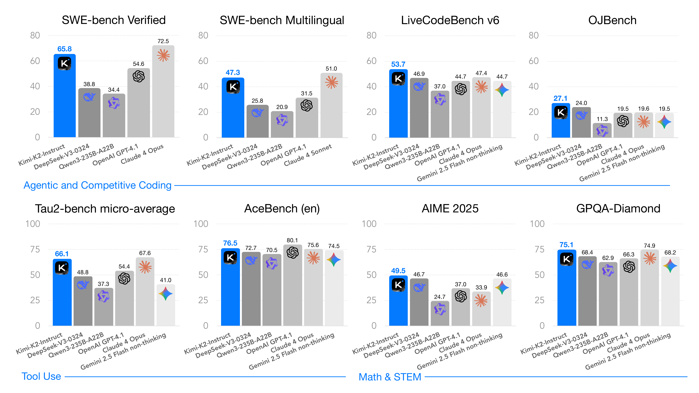
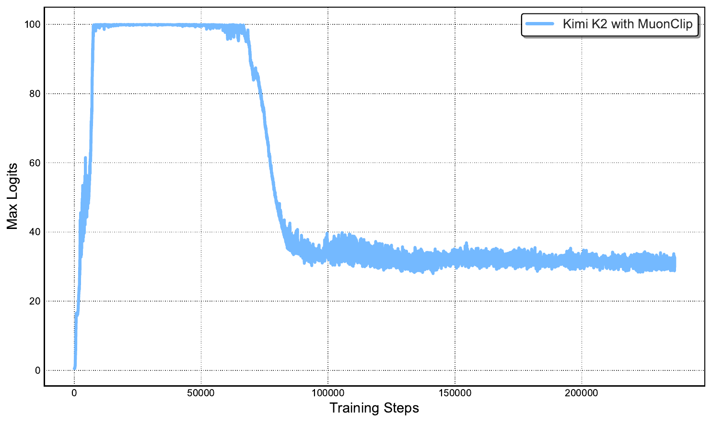
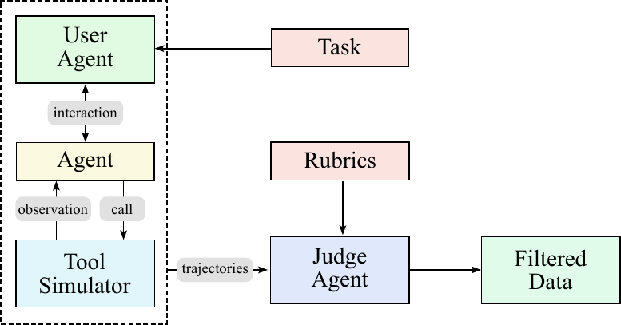

Problem: From Static Learning to Agentic Intelligence
LLMs are transitioning from static imitation to Agentic Intelligence: perceive, plan, reason, and act in dynamic environments. This shift challenges both pre-training (data scarcity) and post-training (agentic data scaling).
How to efficiently synthesize large-scale, high-quality agentic trajectory data and combine it with RL?
High-quality human data is increasingly scarce. Token efficiency (learning signal per token) becomes the key scaling coefficient.
Agentic abilities (multi-step reasoning, planning, tool use) are rare and hard to scale in natural data.

MuonClip optimizer (Muon + QK-Clip) enables stable 15.5T token pre-training. Ultra-sparse MoE (384 experts, 48x sparsity) achieves 1.69x FLOPs reduction.
MuonClip + Ultra-Sparse MoE + Agentic RL
QK-Clip stabilizes Muon at scale. Per-head clipping of exploding attention logits. 15.5T tokens, zero loss spike.
1.04T total, 32B active. 384 experts, 8 per token, 48x sparsity. Sparsity 48 reduces 1.69x FLOPs vs. sparsity 8.
3-layer pipeline: Tool Spec (3K+ real + 20K+ synthetic) → Agent/Task Generation → Trajectory + LLM judge filtering.
K2 judges its own outputs via pairwise comparisons. Closed-loop critic refinement with verifiable signals.

Experimental Results
Kimi K2 ranks #1 among open-source models on LMSYS Arena. Achieves SOTA on SWE-bench, tau2-bench, ACEBench, and general benchmarks.
| Benchmark | Kimi K2 | Claude 4 Opus |
|---|---|---|
| Agentic Benchmarks | ||
| SWE-bench Verified | 65.8% | ~68% |
| tau2-bench | 66.1 | — |
| ACEBench (en) | 76.5 | — |
| General Benchmarks | ||
| LiveCodeBench v6 | 53.7% | — |
| AIME 2025 | 49.5% | — |
| MMLU | 89.5% | — |
Sparsity 48 reduces 1.69x FLOPs vs. sparsity 8. MuonClip enables stable 15.5T token training with zero loss spike.

Rephrasing > Multi-epoch: 10x rephrase + 1 epoch beats 1x rephrase + 10 epoch (SimpleQA 23.76% → 28.94%). Self-critique RL extends verifiable rewards to open-domain tasks.